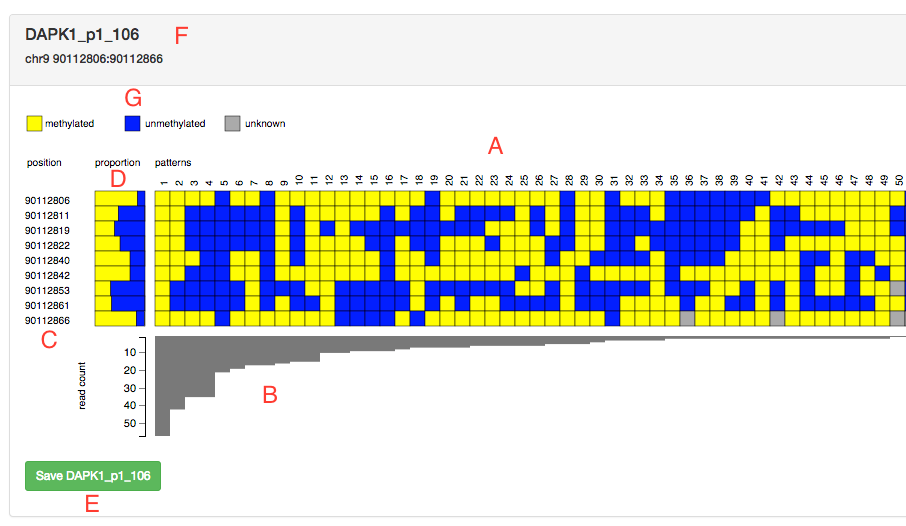

Introduction
This program summarises the resultant DNA methylation pattern data from the output of Bismark bismark_methylation_extractor. Information of the DNA methylation positions for each amplicon, DNA methylation patterns observed within each amplicon and their abundance counts are summarised into a tab delimited text file amenable for further downstream statistical analysis and visualization.
Requirements
- Whole genome bisulfite short read sequencing data (WGBS), or Reduced Representation Bisulfite Sequencing (RRBS), or Bisulfite Amplicon Sequencing.
- Bismark v0.12.2 and it’s dependencies (bwa v0.7.5a-r405).
- Python 2.7 or above (but not Python 3).
- Methpat and it’s dependencies https://github.com/bjpop/methpat.
- A modern web browser such as Chrome, Firefox or Safari.
Installation
Methpat currently requires version 2.7 of Python.
The best way to install Methpat is to use the following command:
pip install git+https://github.com/bjpop/methpat.git
This will automatically download and install the dependencies of methpat.
Usage
usage: methpat [-h] [--version] [--count_thresh THRESH] --amplicons
AMPLICONS_FILE [--logfile FILENAME] [--html FILENAME]
[--webassets {package,local,online}] [--title TITLE]
[--filterpartial] [--min_cpg_percent PERCENT]
BISMARK_FILE
Summarise methylation patterns in bismark output, and generate visualisation.
positional arguments:
BISMARK_FILE input bismark file
optional arguments:
-h, --help show this help message and exit
--version show program's version number and exit
--count_thresh THRESH
only display methylation patterns with at least THRESH
number of matching reads, defaults to "0"
--amplicons AMPLICONS_FILE
file containing amplicon information in TSV format
--logfile FILENAME log progress in FILENAME, defaults to "methpat.log"
--html FILENAME save visualisation in html FILENAME defaults to
"methpat.html"
--webassets {package,local,online}
location of assets used by output visualisation web
page, defaults to "package"
--title TITLE title of the output visualisation page, defaults to
"Methylation Patterns"
--filterpartial Ignore reads which contain (at least one) unknown
methylation status
--min_cpg_percent PERCENT
only consider CPG sites which occur at least PERCENT
of reads for an amplicon
Explanation of command line arguments
-
--version: Display the version number of methpat and then exit. -
--count_thresh THRESH: Only display methylation patterns with at least THRESH number of matching reads. -
--amplicons AMPLICONS_FILE: Input file containing amplicon information in TSV format (described below). -
--logfile FILENAME: Output log progress in FILENAME. -
--html FILENAME: Save visualisation in html FILENAME. -
--webassets {package,local,online}: Location of assets used by output visualisation web page. Web assets are files needed by the HTML visualisation (javascript and CSS files). Each option has the following meaning:-
package: web asset files are found in the directory where methpat is installed on your computer. These files are automatically set up when methpat is installed. You do not need to do any extra steps to make this work, and it does not require a network connection, therefore it is the default behaviour for methpat. This mode is useful for viewing the HTML visualisation on the same computer where methpat is installed. It is not useful for sharing the visualisation with others or publishing on the internet as a web page. -
local: web asset files are found in the directory containing the HTML visualisation file - they must be copied there manually by the user. The web asset files can be found in themethpat/datasub-directory of the source code repository. This mode is useful for sharing the files with others who wish to view the HTML visualisation without an internet connection. -
online: The web assets are stored on the internet. This mode is useful for sharing the visualisation with others or publishing on the internet as a web page.
-
-
--title TITLE: Title of the output visualisation page, defaults to "Methylation Patterns". -
--filterpartial: Remove from consideration any reads which contain at least one CpG site with unknown methylation state. -
--min_cpg_percent PERCENT: Count the frequency of occurrences of each CpG site in a given amplicon and only include sites which occur in at least PERCENT of the total. This can be helpful for ignoring low frequency errors in the data which would otherwise show up as putative CpG sites, and may lead to many occurrences of unknown sites in other reads.
Input amplicons file format
The amplicons (or regions of interest) are defined by this tab-delimited text file. The order of regions listed in this file will correspond to the order of display in the html file generated. The file requires 7 columns which define:
- chromosome
- start coordinate of amplicon/region of interest
- end coordinate of amplicon/region of interest
- name of amplicon/region of interest
- size of amplicon/region of interest
- length of forward PCR primer of amplicon/region of interest, number of base pairs to ignore from the start
- length of reverse PCR primer of amplicon/region of interest, number of base pairs to ignore from the end
See the file examples/example_amplicons.txt for an example input amplicons file, which is used in the worked example below.
Worked example
Run Bismark as per instructions to prepare the reference genome as outlined in the bismark manual.
Run Bismark to align raw read files (fastq) as below with no mismatches:
bismark -n 0 -q -o <nameOfOutPutDirectory> --bam --ambiguous --chunkmbs 10204 --non_directional /path/to/reference/genome <fastq.file>
Run bismark methylation extractor to create an output text file containing read DNA methylation pattern information:
bismark_methylation_extractor -s <bismarkAlignedFileName.bam>
This creates a series of text files prefixed with the methylation orientation and reference genome strand data was extracted from. For the purposes here, the files prefixed with CpG are then processed with methpat.
For each bismark output file with a bismark.txt suffix, run the following command to generate the methpat output. The example below uses the data files in the examples directory of the methpat source package:
methpat --amplicons example_amplicons.txt example1_bismark.txt > example_methpat.tsv
The above example generates three output files:
-
example_methpat.tsv: summarises the read count and DNA methylation pattern information for all amplicons/regions of interest listed in the amplicons file. -
methpat.log: log information about the progress of the methpat program (useful for debugging purposes if things don't work as you expect, also records the command line that was used just in case you want to run the exact same command again). -
methpat.html: interactive HTML visualisation of the methylation patterns for each amplicon/region of interest. This is best viewed in Chrome, Firefox and Safari (but not Internet Explorer).
See the file examples/methpat.html which contains the visualisation of the above worked example.
Format of the methylation pattern counts output text file
One of the main outputs of methpat is a tab-delimited text file which summarises the counts for each methylation pattern over all amplicons from the input. In the example above this output file is called example_methpat.tsv. The file has seven columns containing the following information:
-
amplicon ID: the identifier of an amplicon from the input amplicons file. -
chr: the chromosome containing the amplicon -
Base position start/CpG start: the coordinate of the first CpG site in the amplicon. -
Base position end/CpG end: the coordinate of the last CpG site in the amplicon. -
Methylation pattern: an encoding of the methylation state of each CpG site in the amplicon. The code "1" means that the site is methylated. The code "0" means the site is unmethylated. The code "-" means that the methylation state of the site is unknown. An example is "11-011-0-" for an amplicon with nine CpG sites, four of which are methylated, three are unmethylated and two are unknown. -
count: the number of times this particular methylation pattern for the amplicon is seen in the Bismark file. -
raw cpg sites: the methylation state of each CpG site for this pattern. It is a list of comma-separated pairs in the form "(CpG coordinate, methylation state)". Coordinates with unknown methylation state are not shown in the list.
See the file examples/methpat.tsv which contains the methylation counts from the above worked example.
Visualisation
Methpat outputs a HTML visualisation of the methylation patterns for each amplicon in the input. By default the file is called methpat.html but you can override this with another name using the --html command line argument.
You can view the visualisation in a web browser (though it is probably best to use Chrome, Firefox or Safari instead of Microsoft Explorer).
Each amplicon in the input appears in the visualisation. The order of the amplicons in the visualisation is the same as the input file. You can dynamically re-order the amplicons from within the Order tab at the top of the page.
A screenshot is shown below for the DAPK1_p1_106 amplicon from the worked example. The red letters are annotations which have been added for the purpose of this document, they are referred to in the explanation below the image.

The main part of the visualisation (A) shows all the methylation patterns for the amplicon. Each pattern is displayed as a vertical column of coloured boxes. By default a yellow box indicates a methylated CpG site, a red box indicates an unmethylated CpG site, and a blue box indicates a CpG site whose methylation state is unknown. By default the patterns are sorted left-to-right in order of frequency of occurrence. The columns are sequentially numbered. The numbers are merely ordinals that can be used to refer to columns, which can be useful when discussing a diagram within a manuscript. In the image above the most frequent pattern is methylated in all CpG sites (all boxes are yellow in column number 1).
The coordinates of each CpG site are listed on the left side of the digram (C), and they are shown in ascending order from top-to-bottom.
A frequency histogram of each pattern is shown as a bar chart below the patterns (B). By default the vertical axis of the graph shows raw read counts for each pattern, however this can be changed to a percentage of total reads. The vertical scale is linear by default but it can be changed to log scale.
The proportion of methylated, unmethylated and unknown methylation for each CpG site across all reads for a given amplicon are shown in coloured rectangles to the left of the patterns (D). In the image above the first CpG site (90112806) is predominantly methylated (mostly yellow), with a small amount of unmethylated sites (red).
The green button at the bottom of the diagram (E) allows you to save a copy of the diagram to file in PNG format to your local computer. By default the saved file will be named after the amplicon with a ".png" suffix. The scale of the PNG file defaults to 1 (same size in pixels as the web page rendering) but this can be increased for larger output images and increased resolution. You may want to set this number higher if you wish to use the PNG files in a publication (downscale the higher-resolution files).
Many aspects of the visualisation can be changed in the "Settings" tab. A screen shot of the settings tab is shown below:
If you change any of the visualisation settings the methylation patterns in the Graphs tab will re-draw automatically when that tab is displayed.
The setting options are described below:
-
Methylation patterns:
- Show methylation site spacing: check on this radio button to display the relative spacing between CpG sites. The vertical width of the spacing is controlled by Methylation site spacing factor, which is a multiple of the normal (non-spaced) display of the patterns. It defaults to 2 which means that the spaced display will be twice as wide as the non-spaced display.
- Sort methylation patterns by: The ordering of the methylation patterns across the screen. The ordering can be by "epiallele frequency" (pattern frequency count) or by "degree of methylation".
- Sort direction (left to right): The ordering of methylation patterns across the screen in left-to-right direction. The ordering can be "ascending" or "descending".
- Pattern read threshold (percent): only display methylation patterns with at least this percentage of reads, out of all the reads for the amplicon. This allows you to dynamically filter out patterns with low relative frequency.
- PNG file save scale factor: the scaling factor for saving the PNG file. By default the saved PNG file will have the same size (and hence number of pixels) as the rendered graph in the web browser. You can increase this scale (and hence image size and resolution) by making this number larger. This may be useful for situations where you need a higher resolution image for the purposes of inclusion in a publication.
- Cell size (pixels): The side-length in pixels of the coloured squares used to show the methylation patterns. Default is 15 pixels.
- Scale pattern intensity: If set to "true" the colour intensity of each methylation pattern will be scaled to indicate its frequency. More frequent patterns are shown brighter and less frequent patterns are shown darker. This is set to "false" by default.
-
Histogram:
- Histogram scaling: How to display the vertical scale of the histogram. The scale can be "linear" or "log".
- Histogram visible: Should the histogram be displayed? If set to "true" then the histogram will be displayed. If set to "false" the histogram will not be displayed.
- Histogram height (pixels): The maximum vertical height of the histogram in pixels. Defaults to 100 pixels.
- Histogram units: The units of the vertical scale on the histogram. The units can be "absolute" or "relative". The absolute scale shows raw counts. The relative scale shows the percentage of all reads for the amplicon.
-
Colour:
- Methylated site: The colour to use for a methylated site.
- Unmethylated site: The colour to use for an unmethylated site.
- Unknown site: The colour to use for a CpG site with unknown methylation state.
- Histogram: The colour of the bars in the histogram.
The relative order of the amplicons in the Graphs tab can be changed dynamically from within the Order tab. The image below shows an example for one set of amplicons. The order of the amplicon names in the list reflects the order that their methylation pattern visualisations will be shown. You can drag the amplicon names in the list to modify their ordering.
The image below illustrates the effect of showing methylation site spacing in the visualisation. Vertical spacing between the rows of the visualisation reflects the relative genomic spacing of the sites.